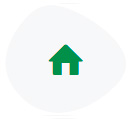

Mas de 120 años promoviendo el desarrollo social, económico y cultural de la comunidad
La sociedad Italiana de Socorros Mutuos de Carcarañá es una asociación promotora del Desarrollo Social, Económica y Cultural de la comunidad, y tras ese cometido lleva 121 años de actividad ininterrumpida otorgando respuestas solidarias a sus asociados. Fundada a fines del siglo XIX por hombres y mujeres que habiendo dejado su país natal, para habitar un lugar para ellos remoto y desconocido, se encuentran ante la imperiosa urgencia de hallar soluciones prácticas a los desafíos y necesidades que a diario se les presentan. Desde un principio se trabaja mancomunadamente para satisfacer las demandas y expectativas de los asociados, en un marco de respeto e igualdad de oportunidades, la solidaridad y el trabajo en común.
Nuestros Servicios
Día a Día trabajamos sumando servicios
Desarrollo Economico
Un servicio seguro y confiable para que realices todas tus operaciones financieras en un solo lugar.
Salud

La salud de nuestros asociados es nuestra prioridad. Descuento permanente en Farmacia Mutual, enfermería y banco de elementos ortopédicos a disposición de nuestros asociados.
Social y Cultural
Contamos con espacios creados para el desarrollo social y cultural de nuestros asociados y la comunidad.
Sistema de Previnsión Social
El más antiguo y sólido sistema de previsión social de la zona. Para que no tengas que hacer esfuerzos económicos ni trámites pesados ante un momento difícil.
Soluciones Habitacionales
Loteo exclusivo para asociados, a minutos del centro de Carcarañá, en una zona de plena expansión y todos los servicios instalados.
Rse
Permanente presencia a través de la propia organización y/o participación de eventos presentados por diversas O.N.G.
INSTITUCIONAL
Tener una mano tendida con espíritu mutualista para buscar soluciones acordes al bien común
La sociedad Italiana de Socorros Mutuos de Carcarañá es una asociación promotora del Desarrollo Social, Económica y Cultural de la comunidad, y tras ese cometido lleva 121 años de actividad ininterrumpida otorgando respuestas solidarias a sus asociados. Fundada a fines del siglo XIX por hombres y mujeres que habiendo dejado su país natal, para habitar un lugar para ellos remoto y desconocido, se encuentran ante la imperiosa urgencia de hallar soluciones prácticas a los desafíos y necesidades que a diario se les presentan. Desde un principio se trabaja mancomunadamente para satisfacer las demandas y expectativas de los asociados, en un marco de respeto e igualdad de oportunidades, la solidaridad y el trabajo en común.
ACTUALIDAD
Estas son nuestras NOVEDADES
¡GRACIAS A NUESTROS SOCIOS!
NUEVA OBRA EN PONTE DI FERRO
Estamos felices de presentarte este nuevo proyecto, que nos encanta, y será un nuevo espacio en nuestra Villa Recreativa para que los asociados puedan disfrutar. Transformaremos la cancha de pádel, en desuso desde hace varios años, en un SUM (Salón de usos múltiples) con capacidad para más de la 100 personas, parrilleros, cocina, baños y todas las comodidades que requiere un espacio social.

¡50 AÑOS JUNTOS!
Como es tradición, cada año homenajeamos a los asociados que cumplen 50 años acompañándonos de manera ininterrumpida. Estamos orgullosos de contar con un nutrido grupo de socios, que han llegado a los 50 años de permanencia. Son cincuenta años de compromiso solidario, de espíritu de trabajo, de tesón y de incansable orgullo de pertenecer. ¡Muchas gracias a todos ellos!…